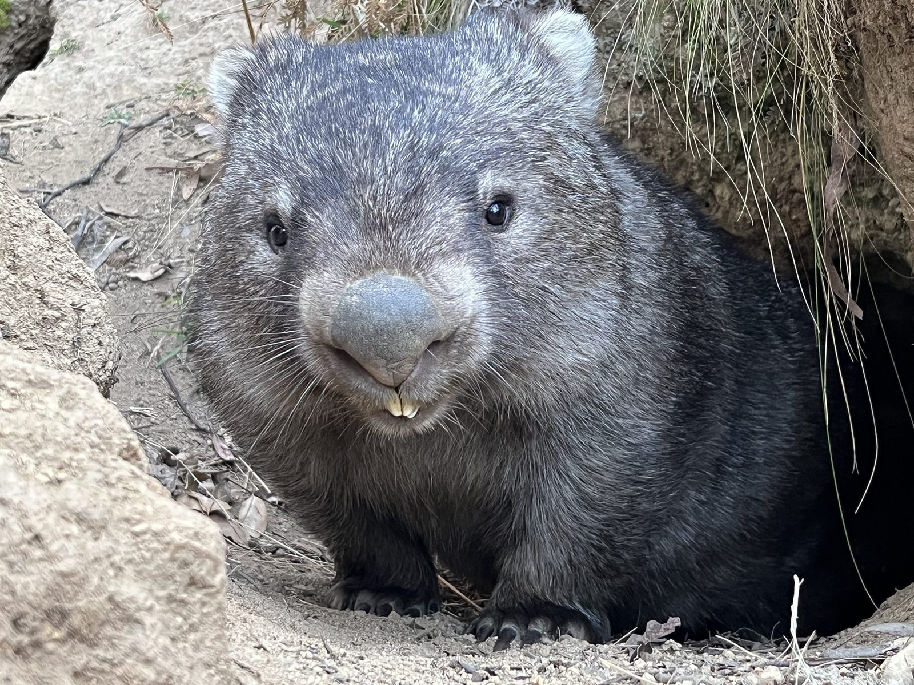
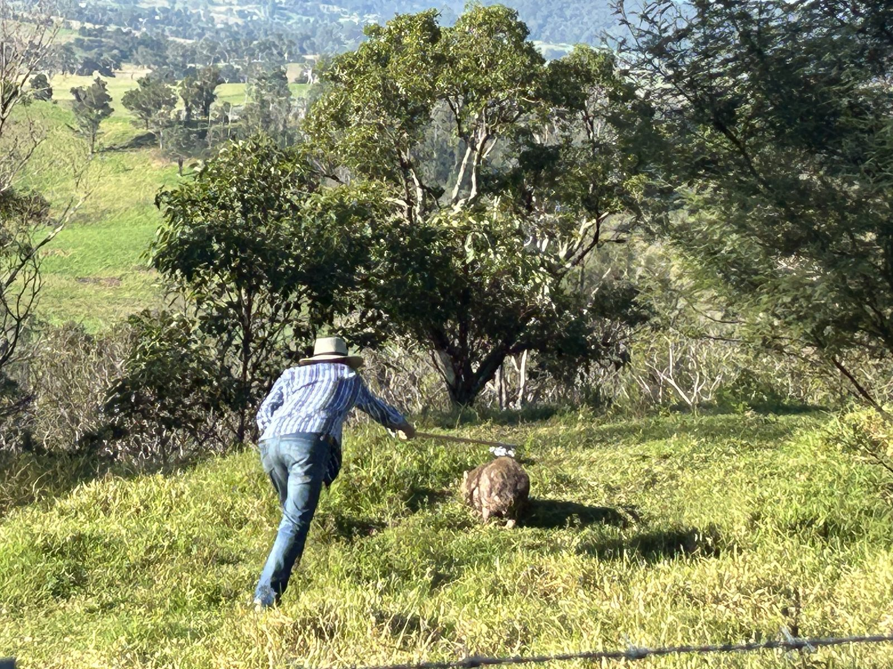
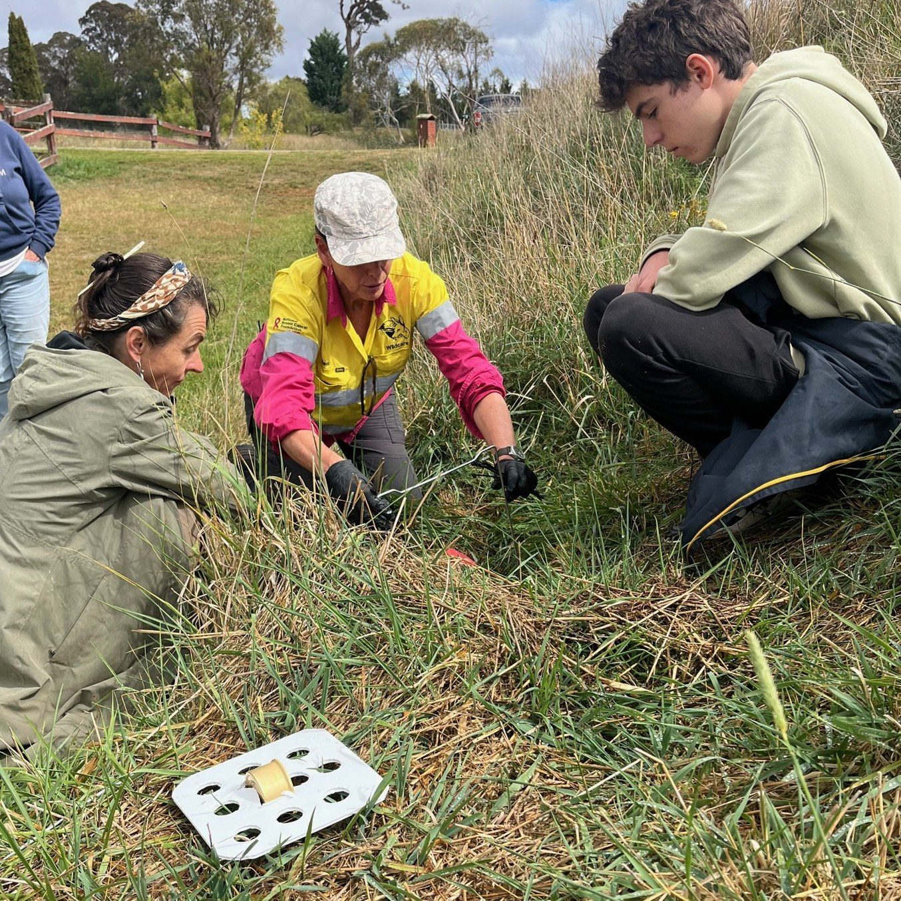
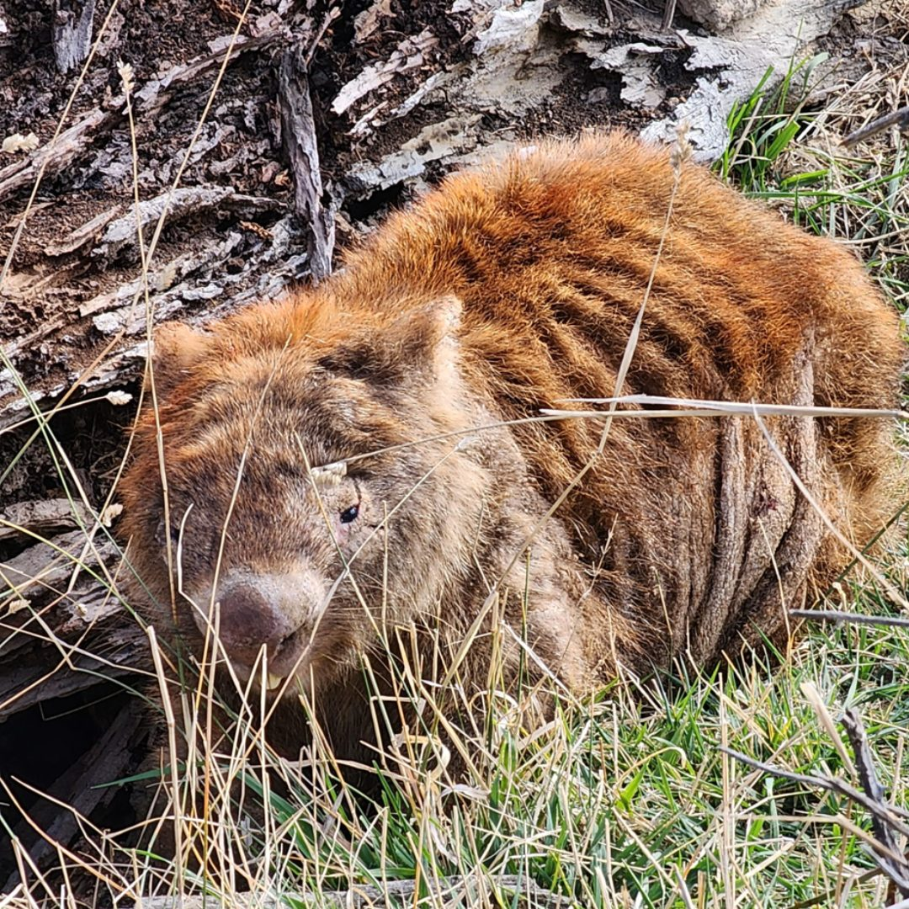
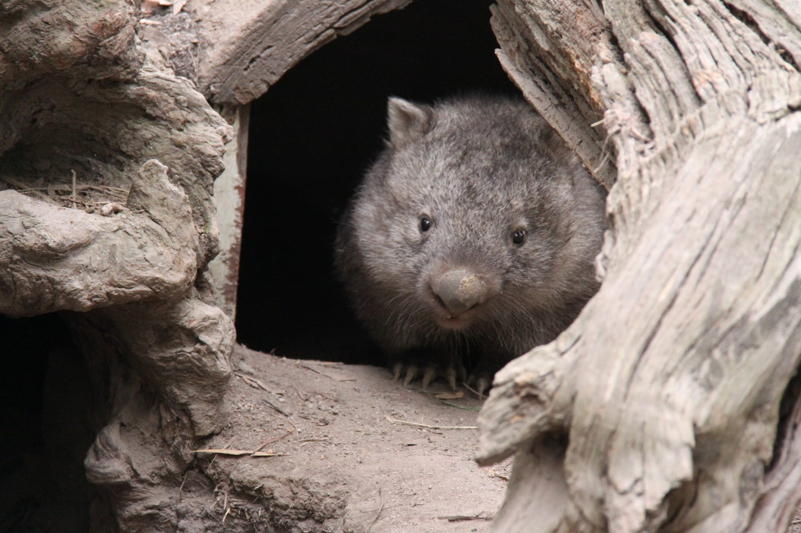
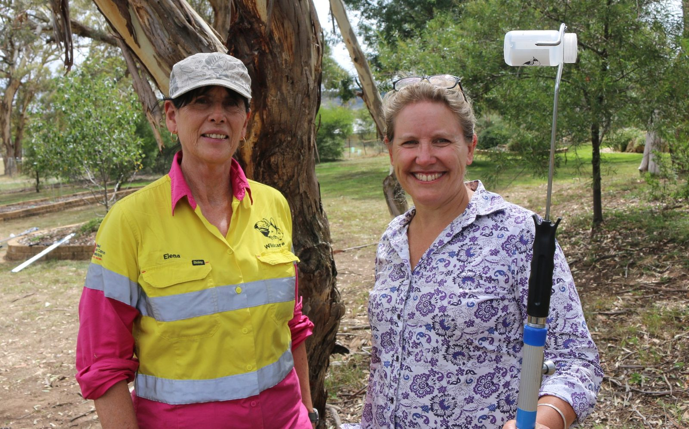
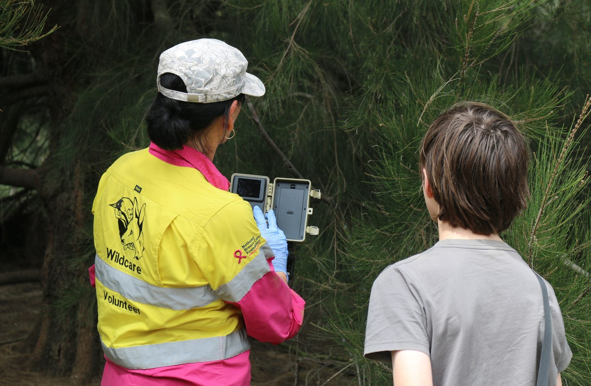
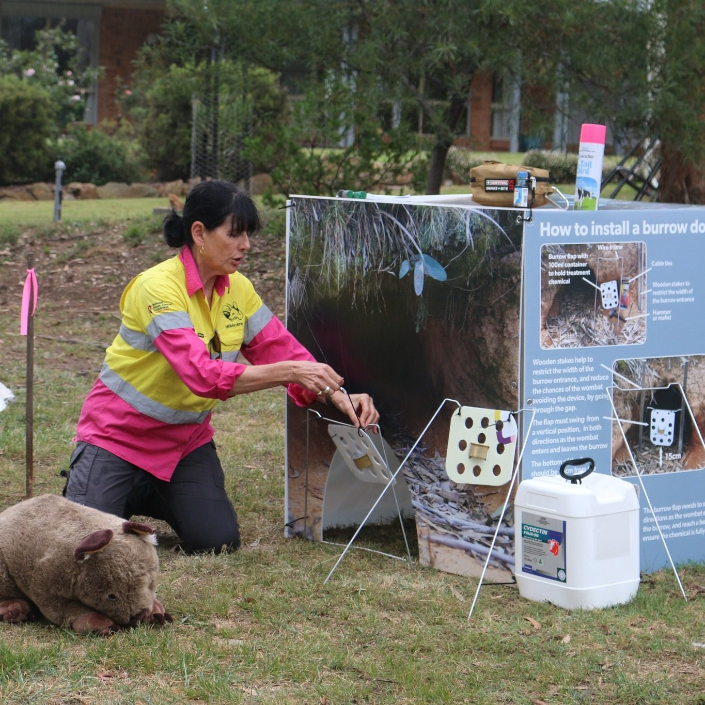
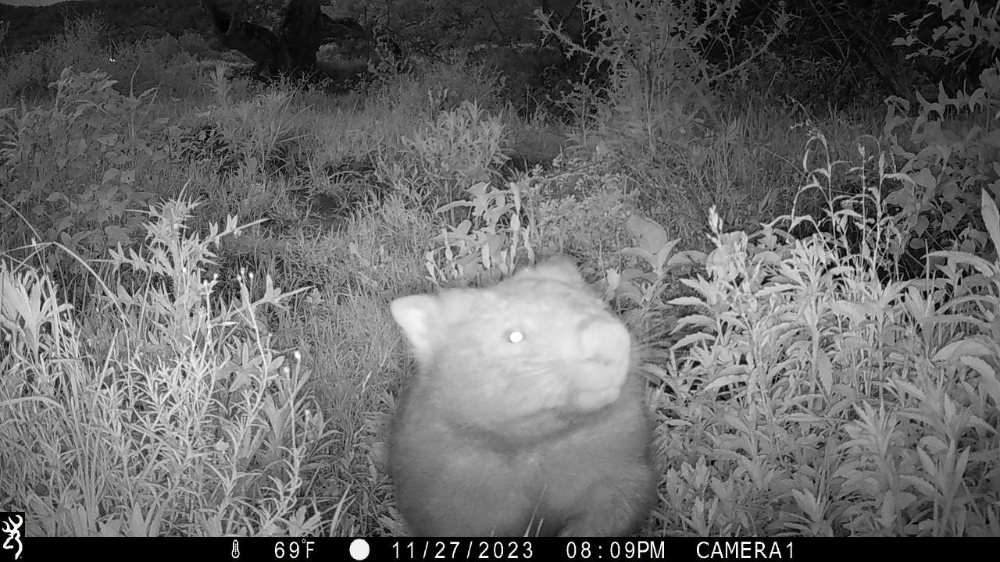
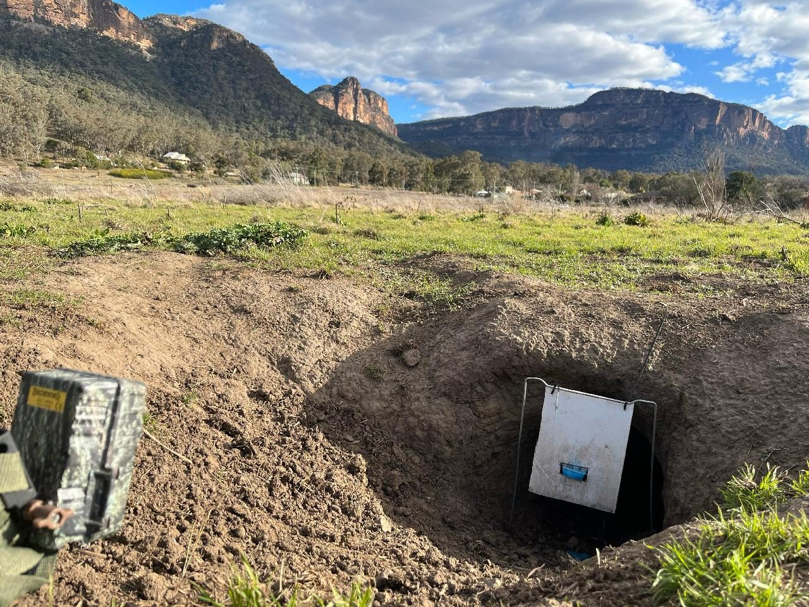

Advanced sarcoptic mange. The skin thickens, cracks and becomes infected.
The problem
A mite that kills slowly, right across the range
Sarcoptic mange is a mite, and for a bare-nosed wombat it is a death sentence if nobody intervenes. It burrows into the skin, and the animal loses hair, thickens and cracks, gets infected, and slowly stops being able to feed, keep warm or get away from anything.
It is present across the entire range of the species, from south-east Queensland through to Tasmania. Not every wombat is affected, but where burrows are shared and densities are high, it moves through a local population fast.

Why it matters
Wombats build the soil everything else depends on
Wombats are ecosystem engineers. A single completed burrow shifts between 1.4 and 5.7 cubic metres of soil, and that digging drives soil turnover, nutrient cycling and how water moves into the ground.
Lose the wombats from a landscape and the soil changes with them. This is not sentiment about a well-liked animal, it is about what happens to country when the thing that turns it over stops digging.

Treatment applied in the field with a pole applicator. Wildcare Queanbeyan, March 2025.
The approach
Money into the hands of the people already treating
We ran this with the New South Wales National Parks and Wildlife Service, putting up to $2 million into rapid response grants between 2023 and 2025. The grants went to licensed wildlife organisations and Indigenous community organisations already doing the treatment, because they hold the permits, the local knowledge and the vehicles.
The money bought treatment chemicals and field equipment, burrow flap systems, volunteer training, and the monitoring that tells us whether any of it worked.

Fitting a flap at a burrow entrance. Wildcare Queanbeyan, March 2025.
The method
Treating a wombat without ever catching it
Burrow flaps matter more than they sound. The flap applies treatment as the animal moves through its own burrow entrance, which is far less stressful than pursuing a wombat across a paddock and far more consistent as a dose.
Eighty-four per cent of recorded treatments were delivered this way.

Harry, before treatment.
Harry
Four weeks, and a wombat goes back to the wild
Harry was young when he was found with mange. He was enrolled in the program and treated with Cydectin through a burrow flap system over four weeks, without ever being handled or held.
At the end of it he was healthy enough to go back to the wild. One animal is not a statistic, but it is the whole point of the method: the treatment goes to the wombat, and the wombat stays where it lives.

The outcome
Five hundred volunteers, and a system that keeps running
Five hundred volunteers were trained and equipped, and more than 4,800 treatments have been logged through the Wombat Mange Portal since 2023. Grant recipients told us the funding did something less visible too. It gave them enough security to keep going, and in some cases to expand.
The monitoring is what turns individual treatments into evidence. Camera traps at treated burrows show which animals come back, and how they are healing.
On the ground
The work up close.
Treatment, training and monitoring across New South Wales.

Volunteers with a pole applicator. Wildcare Queanbeyan, March 2025.

Checking a monitoring camera at a treatment site. Wildcare Queanbeyan, March 2025.

Training day: how to install a burrow door. Wildcare Queanbeyan, March 2025.

Camera trap, November 2023.

A burrow flap and monitoring camera at a treated burrow.
 Saving Species
QLD
Saving Species
QLD